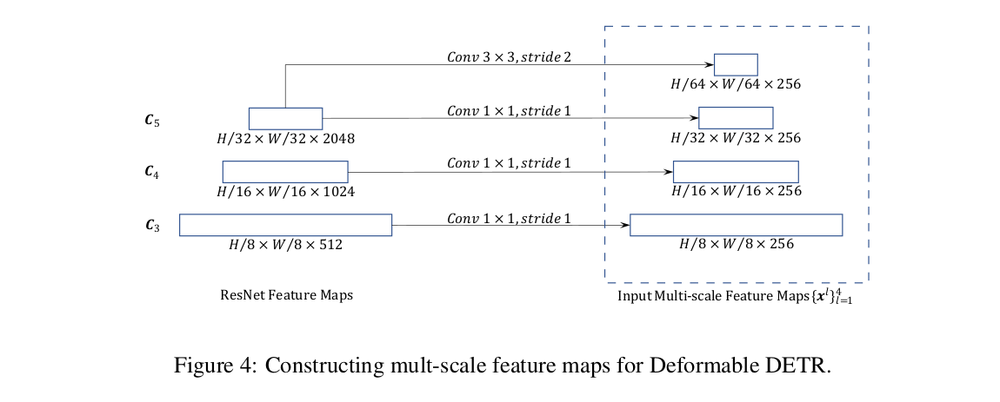

Code
import torch
import torch.nn as nn
print(f'torch version {torch.__version__}')torch version 2.9.0+cpuimport torch
import torch.nn as nn
print(f'torch version {torch.__version__}')torch version 2.9.0+cpuThis blog provides a code-level walkthrough of the internals of Deformable DETR and its core component—deformable attention—to understand how it works in practice. We’ll explore the full pipeline: starting from how a batch of images flows through the convolutional backbone, then into the encoder, and finally how deformable attention operates within the architecture. Along the way, we’ll highlight where Deformable DETR aligns with the original DETR and where it diverges. All examples shown below are executable in the accompanying notebook and have been tested to work end-to-end.
I assume the reader have good understanding of DETR
Deformable DETR is an enhancement of DETR, which was one of the first approaches to apply transformers to object detection. While DETR introduced a novel paradigm, it faced two major challenges
1. Difficulty Detecting Small ObjectsMost modern object detection networks leverage Feature Pyramid Networks (FPN) to handle objects at multiple scales. However, DETR cannot easily incorporate FPN because its global self-attention operates over the entire feature map, making multi-scale attention computationally expensive. Deformable DETR addresses this by introducing multi-scale deformable attention, which selectively attends to a small set of key points across different feature levels instead of the entire map. This enables efficient multi-scale feature aggregation without exploding computational cost.
2. Long Training TimeDETR requires extensive training because the model must learn which parts of the feature map to attend to from scratch, which is slow to converge. Deformable DETR solves this by using a Deformable Attention Module, which focuses on a sparse set of relevant keys rather than all possible keys. This reduces complexity and accelerates convergence significantly.

pixel_values = torch.randn(4,3,1065,1066)
# 1 .Initially we need to pass the images through the FPN and get features across different layers,
# 2. Also we need to get positional embedding for each of the feature map, the positional embedding is similar to the normal sine-cosine positional embedding in the original paper,
# the only difference here is that since we have HxW in the feature domain , suppose if our embedding dim is 256, we will have them alingned in such a way that the first 128 corresponds to vertical and the next 128 corresponds
# to vertical so that in the end we end up with 256 and that encodes both vertical and horizontal positions. https://github.com/fundamentalvision/Deformable-DETR/blob/11169a60c33333af00a4849f1808023eba96a931/models/position_encoding.py#L55
# 3. Suppose we get feature map from 4 layers and let them be (4,512,134,134) ,(4,1024,67,67) , (4,2048,34,34) ,(4,2048,17,17) [Note the actual feature map in the paper is created by an additional conv+group norm] and there positional embeddings w
# will have the same size as well. but with the corresponding embedding dim, so they will be of size (4,256,134,134) ,(4,256,67,67) ,(4,256,34,34) ,(4,256,17,17)
feature_shapes = [
(4, 512, 134, 134),
(4, 1024, 67, 67),
(4, 2048, 34, 34),
(4, 2048, 17, 17)
]
# Positional embedding shapes (same spatial dims, but channel dim = 256)
embedding_shapes = [
(4, 256, 134, 134),
(4, 256, 67, 67),
(4, 256, 34, 34),
(4, 256, 17, 17)
]
# original implementation here https://github.com/fundamentalvision/Deformable-DETR/blob/11169a60c33333af00a4849f1808023eba96a931/models/backbone.py#L71
feature_maps = [torch.randn(shape) for shape in feature_shapes]
# original implemenation here https://github.com/fundamentalvision/Deformable-DETR/blob/11169a60c33333af00a4849f1808023eba96a931/models/position_encoding.py#L55
positional_embeddings = [torch.randn(shape) for shape in embedding_shapes]
# 4 . Now we have to have a 1x1 conv layer to reduce the channel dimension of the feature so that they match the embedding dimension of 256
conv_layers = nn.ModuleList([
nn.Conv2d(in_channels=512, out_channels=256, kernel_size=1),
nn.Conv2d(in_channels=1024, out_channels=256, kernel_size=1),
nn.Conv2d(in_channels=2048, out_channels=256, kernel_size=1),
nn.Conv2d(in_channels=2048, out_channels=256, kernel_size=1)
])
# Apply the 1x1 conv layers
reduced_feature_maps = [conv(feature) for conv, feature in zip(conv_layers, feature_maps)]
for i, (fmap,pos_emb) in enumerate(zip(reduced_feature_maps,positional_embeddings)):
print(f"Reduced feature map {i+1} shape:", fmap.shape)Reduced feature map 1 shape: torch.Size([4, 256, 134, 134])
Reduced feature map 2 shape: torch.Size([4, 256, 67, 67])
Reduced feature map 3 shape: torch.Size([4, 256, 34, 34])
Reduced feature map 4 shape: torch.Size([4, 256, 17, 17])# 5 . Also we need a learnable Level embedding for each levels , since here we are using 4 layers, and 256 embedding dim , the size of the level embedding will be (4,256)
# Learnable level embedding (in actual model this would be nn.Parameter)
level_embedding = torch.randn((4, 256)) # shape: (num_levels, embedding_dim)
#6. Now we need to flatten and transpose the features and positional embedding so they become the similar shape like token_len X embedding_dim , for example the first feature map will become (4,134*134,256) ,similarly we have do this
# for all the feature maps and the positional embedding. and one additional thing to do is to add the level embedding to the positional embedding.
features_flatten = []
positional_and_level_embedding_flattened = []
for level, (feature, pos_emb) in enumerate(zip(reduced_feature_maps, positional_embeddings)):
# Flatten and transpose: (B, C, H, W) -> (B, HW, C)
feature_flatten = feature.flatten(2).transpose(1, 2)
positional_plus_level_embed = pos_emb.flatten(2).transpose(1, 2) + level_embedding[level].view(1, 1, -1)
features_flatten.append(feature_flatten)
positional_and_level_embedding_flattened.append(positional_plus_level_embed)
# Print shapes
print(f"Level {level + 1}:")
print(f" Feature shape: {feature_flatten.shape}")
print(f" Positional + Level Embedding shape: {positional_plus_level_embed.shape}")
Level 1:
Feature shape: torch.Size([4, 17956, 256])
Positional + Level Embedding shape: torch.Size([4, 17956, 256])
Level 2:
Feature shape: torch.Size([4, 4489, 256])
Positional + Level Embedding shape: torch.Size([4, 4489, 256])
Level 3:
Feature shape: torch.Size([4, 1156, 256])
Positional + Level Embedding shape: torch.Size([4, 1156, 256])
Level 4:
Feature shape: torch.Size([4, 289, 256])
Positional + Level Embedding shape: torch.Size([4, 289, 256])# Step 7: Concatenate along sequence dimension (dim=1)
inputs_embeds = torch.cat(features_flatten, dim=1) # shape: (B, total_seq_len, 256)
position_embeddings = torch.cat(positional_and_level_embedding_flattened, dim=1) # shape: (B, total_seq_len, 256)
print("Concatenated Inputs Embeds shape:", inputs_embeds.shape)
print("Concatenated Position Embeddings shape:", position_embeddings.shape)Concatenated Inputs Embeds shape: torch.Size([4, 23890, 256])
Concatenated Position Embeddings shape: torch.Size([4, 23890, 256])# 8. we need to apply a initial dropout before passing it to the encoder
inputs_embeds = nn.functional.dropout(inputs_embeds, p=0.1)
batch_size = inputs_embeds.shape[0]
#9. Generating the reference points, so this is a concept that is similar to the deformable convolution , so basically for each feature_point/query in the feature map we need to look into the corresponding point in the other feature
# map as well, feature maps a re normilized based on their height and width, so we can look for the corresponding point for each query in different points as well, here
#original implemenation https://github.com/fundamentalvision/Deformable-DETR/blob/11169a60c33333af00a4849f1808023eba96a931/models/deformable_transformer.py#L238
spatial_shapes_list = [(134, 134), (67, 67), (34, 34), (17, 17)]
reference_points_list = []
for H_, W_ in spatial_shapes_list:
# Create meshgrid of normalized coordinates
ref_y, ref_x = torch.meshgrid(
torch.linspace(0.5, H_ - 0.5, H_, dtype=torch.float32),
torch.linspace(0.5, W_ - 0.5, W_, dtype=torch.float32),
indexing='ij' # Important for correct axis ordering
)
# Normalize
ref_y = ref_y.reshape(-1) / H_
ref_x = ref_x.reshape(-1) / W_
# Stack and expand to batch size
ref = torch.stack((ref_x, ref_y), dim=-1) # shape: (H_*W_, 2)
ref = ref[None].expand(batch_size, -1, -1) # shape: (B, H_*W_, 2)
reference_points_list.append(ref)
# Concatenate all levels
reference_points = torch.cat(reference_points_list, dim=1) # shape: (B, total_seq_len, 2)
# Expand to include level dimension
reference_points = reference_points[:, :, None, :] # shape: (B, total_seq_len, 1, 2)
# Repeat across levels
num_levels = len(spatial_shapes_list)
reference_points = reference_points.expand(-1, -1, num_levels, -1) # shape: (B, total_seq_len, L, 2)
print("Reference points shape input to encoder ",reference_points.shape)
Reference points shape input to encoder torch.Size([4, 23890, 4, 2])#so for now each query we have 4 positions (x,y) across 4 different channels, now this will be passed to the encoder.
## DEFORMABLE MULTI SCALE ATTENTION.
# params
num_heads = 8
num_levels = 4
n_points = 4
embdedding_dim = inputs_embeds.shape[-1]
batch_size, num_queries, _ = inputs_embeds.shape
fc1 = nn.Linear(embdedding_dim, 512)
fc2 = nn.Linear(512, embdedding_dim)
layer_norm1 = nn.LayerNorm(embdedding_dim)
layer_norm2 = nn.LayerNorm(embdedding_dim)
final_layer_norm = nn.LayerNorm(embdedding_dim)
# learnable parameters in the layer
sampling_offsets_layer = nn.Linear(embdedding_dim, num_heads * num_levels * n_points *2)
attention_weights_layer = nn.Linear(embdedding_dim,num_heads * num_levels * n_points)
value_projection_layer = nn.Linear(embdedding_dim,embdedding_dim)
output_projection_layer = nn.Linear(embdedding_dim,embdedding_dim)
#initially we add the poistional_embedding to the input_embeds
hidden_states = inputs_embeds + position_embeddings
value = value_projection_layer(inputs_embeds)
value = value.view(batch_size,num_queries, num_heads,embdedding_dim//num_heads)
print(f"Value shape = {value.shape}")
# note for the below sampling offset and attention weights we are using the hidden state which have positional embedding information in it.
sampling_offsets = sampling_offsets_layer(hidden_states)
sampling_offsets = sampling_offsets.view(batch_size,num_queries,num_heads,num_levels,n_points,2) # NOTE : We actually need to normalize this wrt to spatial size of each feature, but omitting here for simplicity
attention_weights = attention_weights_layer(hidden_states)
attention_weights = attention_weights.view(batch_size,num_queries,num_heads,num_levels*n_points)
attention_weights = torch.nn.functional.softmax(attention_weights, -1).view(batch_size,num_queries,num_heads,num_levels,n_points) # note here the softmax is along a row of size 16 ,intuitively this means there 4 points from 4 feature levels
print(f"Sampling offset shape = {sampling_offsets.shape}")
print(f"Attention weights shape = {attention_weights.shape} \n")
# Now we have to modify the refrence points with these sampling points, what this means is that for each of the reference points , we need to look into 4 more points across 8 different heads
# so initially we had for each query 1 points account each feature dimension making it total 4 and now when we add this sampling offsets it makes 4 more across 8 differenet heads
reference_points = reference_points[:,:,None,:,None,:]
print(f"Reference points with unsqueezed dimension for head and levels = {reference_points.shape}")
sampling_location = reference_points + sampling_offsets
print(f"Final sampling locations = {sampling_location.shape}")Value shape = torch.Size([4, 23890, 8, 32])
Sampling offset shape = torch.Size([4, 23890, 8, 4, 4, 2])
Attention weights shape = torch.Size([4, 23890, 8, 4, 4])
Reference points with unsqueezed dimension for head and levels = torch.Size([4, 23890, 1, 4, 1, 2])
Final sampling locations = torch.Size([4, 23890, 8, 4, 4, 2])
# Split the value tensor into per-level chunks based on spatial shapes
value_list = value.split([h * w for h, w in spatial_shapes_list], dim=1)
batch_size, _, num_heads, hidden_dim = value.shape
# Print the shape of each level's value tensor
for level, feature in enumerate(value_list):
print(f"Splitted feature at level {level} --> {feature.shape}")
# Convert normalized sampling locations from [0, 1] to [-1, 1] for grid_sample
sampling_grids = 2 * sampling_location - 1
print(f"\nSampling grid shape = {sampling_grids.shape} \n")
sampling_value_list = []
for level_id, (height, width) in enumerate(spatial_shapes_list):
# Reshape value tensor for grid sampling:
# (B, H*W, num_heads, C) → (B, num_heads, H*W, C) → (B*num_heads, C, H, W)
value_l = (
value_list[level_id]
.flatten(2) # (B, H*W, num_heads * C)
.transpose(1, 2) # (B, num_heads * C, H*W)
.reshape(batch_size * num_heads, hidden_dim, height, width)
)
print(f"Value at level {level_id} {value_l.shape}")
# Reshape sampling grid:
# (B, num_queries, num_heads, num_levels, num_points, 2)
# → (B, num_heads, num_queries, num_points, 2)
# → (B*num_heads, num_queries, num_points, 2)
sampling_grid_l = sampling_grids[:, :, :, level_id].transpose(1, 2).flatten(0, 1)
# Sample values using bilinear interpolation
sampling_value_l = nn.functional.grid_sample(
value_l,
sampling_grid_l,
mode="bilinear",
padding_mode="zeros",
align_corners=False,
)
sampling_value_list.append(sampling_value_l)
Splitted feature at level 0 --> torch.Size([4, 17956, 8, 32])
Splitted feature at level 1 --> torch.Size([4, 4489, 8, 32])
Splitted feature at level 2 --> torch.Size([4, 1156, 8, 32])
Splitted feature at level 3 --> torch.Size([4, 289, 8, 32])
Sampling grid shape = torch.Size([4, 23890, 8, 4, 4, 2])
Value at level 0 torch.Size([32, 32, 134, 134])
Value at level 1 torch.Size([32, 32, 67, 67])
Value at level 2 torch.Size([32, 32, 34, 34])
Value at level 3 torch.Size([32, 32, 17, 17])for f in sampling_value_list:
print(f.shape)torch.Size([32, 32, 23890, 4])
torch.Size([32, 32, 23890, 4])
torch.Size([32, 32, 23890, 4])
torch.Size([32, 32, 23890, 4])final_key_matrix = torch.stack(sampling_value_list, dim=-2)
print(f"Stacked value matrix shape before flattening = {final_key_matrix.shape}")
final_key_matrix = final_key_matrix.flatten(-2)
print(f"Stacked value matrix shape after flattening = {final_key_matrix.shape}")Stacked value matrix shape before flattening = torch.Size([32, 32, 23890, 4, 4])
Stacked value matrix shape after flattening = torch.Size([32, 32, 23890, 16])attention_weights = attention_weights.transpose(1, 2).reshape(
batch_size * num_heads, 1, num_queries, num_levels * n_points
)
attention_weights.shapetorch.Size([32, 1, 23890, 16])output = final_key_matrix*attention_weights
output.shapetorch.Size([32, 32, 23890, 16])output = output.sum(-1)
output.shapetorch.Size([32, 32, 23890])output = output.view(batch_size,num_heads*hidden_dim,num_queries).transpose(1,2)
output.shapetorch.Size([4, 23890, 256])output.shapetorch.Size([4, 23890, 256])hidden_states = nn.functional.dropout(hidden_states,p=0.1)
hidden_states = inputs_embeds + hidden_states # residual
hidden_states = layer_norm1(hidden_states)
residual = hidden_states
hidden_states = nn.ReLU()(fc1(hidden_states))
hidden_states = nn.functional.dropout(hidden_states,p=0.1)
hidden_states = fc2(hidden_states)
hidden_states = nn.functional.dropout(hidden_states,p=0.1)
hidden_states = residual+hidden_states
hidden_states = layer_norm2(hidden_states)hidden_states.shapetorch.Size([4, 23890, 256])encoder_output = hidden_states.clone()
num_query = 300
embedding_dim = encoder_output.shape[-1]
num_levels
# Learnable query and positional embeddings
position_embeddings = nn.Parameter(torch.randn(num_query, embedding_dim)) #(num_query,embedding_dim)
position_embeddings = position_embeddings[None].expand(batch_size,-1,-1) # (batch_size,num_query,embedding_dim)
input_query = nn.Parameter(torch.randn(num_query, embedding_dim)) #(num_query,embedding_dim)
input_query = input_query[None].expand(batch_size,-1,-1) # (batch_size,num_query,embedding_dim)
fc1 = nn.Linear(embdedding_dim, 512)
fc2 = nn.Linear(512, embdedding_dim)
layer_norm1 = nn.LayerNorm(embdedding_dim)
layer_norm2 = nn.LayerNorm(embdedding_dim)
layer_norm3 = nn.LayerNorm(embedding_dim)
# Linear layer to generate reference points from positional embeddings
decoder_reference_point_layer = nn.Linear(embedding_dim, 2)
# Generate normalized reference points in [0, 1] range
reference_points = decoder_reference_point_layer(position_embeddings).sigmoid() # shape: (num_query, 2)
print(f"Encode Reference points shape {reference_points.shape}")Encode Reference points shape torch.Size([4, 300, 2])reference_points_input = reference_points[:,:,None,:].expand(batch_size,num_query,num_levels,2)
reference_points_input.shapetorch.Size([4, 300, 4, 2])# Initially here we will have the normal self attention.
residual = input_query
multihead_attn = nn.MultiheadAttention(embedding_dim, num_heads)
self_attn_output, _ = multihead_attn(input_query+position_embeddings, input_query+position_embeddings, input_query)
hidden_state_after_self_attention = self_attn_output + residual # residual connection.
hidden_state_after_self_attention = layer_norm1(hidden_state_after_self_attention)
second_residual = hidden_state_after_self_attention
print(f"Hidden state shape input to cross attention {self_attn_output.shape}")Hidden state shape input to cross attention torch.Size([4, 300, 256])position_embeddings.shape,hidden_state_after_self_attention.shape,encoder_output.shape(torch.Size([4, 300, 256]),
torch.Size([4, 300, 256]),
torch.Size([4, 23890, 256]))## DEFORMABLE MULTI SCALE ATTENTION.
num_heads = 8
num_levels = 4
n_points = 4
embdedding_dim = hidden_state_after_self_attention.shape[-1]
batch_size, num_queries, _ = hidden_state_after_self_attention.shape
# learnable parameters in the layer
sampling_offsets_layer = nn.Linear(embdedding_dim, num_heads * num_levels * n_points *2)
attention_weights_layer = nn.Linear(embdedding_dim,num_heads * num_levels * n_points)
value_projection_layer = nn.Linear(embdedding_dim,embdedding_dim)
output_projection_layer = nn.Linear(embdedding_dim,embdedding_dim)
#initially we add the poistional_embedding to the input_embeds
hidden_states = hidden_state_after_self_attention + position_embeddings
value = value_projection_layer(encoder_output)
_,encoder_sequence_length,_ = value.shape
value = value.view(batch_size,encoder_sequence_length, num_heads,embdedding_dim//num_heads)
print(f"Value shape = {value.shape}")
# note for the below sampling offset and attention weights we are using the hidden state which have positional embedding information in it.
sampling_offsets = sampling_offsets_layer(hidden_states)
sampling_offsets = sampling_offsets.view(batch_size,num_queries,num_heads,num_levels,n_points,2) # NOTE : We actually need to normalize this wrt to spatial size of each feature, but omitting here for simplicity
attention_weights = attention_weights_layer(hidden_states)
attention_weights = attention_weights.view(batch_size,num_queries,num_heads,num_levels*n_points)
attention_weights = torch.nn.functional.softmax(attention_weights, -1).view(batch_size,num_queries,num_heads,num_levels,n_points) # note here the softmax is along a row of size 16 ,intuitively this means there 4 points from 4 feature levels
print(f"Sampling offset shape = {sampling_offsets.shape}")
print(f"Attention weights shape = {attention_weights.shape} \n")
# Now we have to modify the refrence points with these sampling points, what this means is that for each of the reference points , we need to look into 4 more points across 8 different heads
# so initially we had for each query 1 points account each feature dimension making it total 4 and now when we add this sampling offsets it makes 4 more across 8 differenet heads
reference_points_input = reference_points_input[:,:,None,:,None,:]
print(f"Reference points with unsqueezed dimension for head and levels = {reference_points_input.shape}")
sampling_location = reference_points_input + sampling_offsets
print(f"Final sampling locations = {sampling_location.shape}")Value shape = torch.Size([4, 23890, 8, 32])
Sampling offset shape = torch.Size([4, 300, 8, 4, 4, 2])
Attention weights shape = torch.Size([4, 300, 8, 4, 4])
Reference points with unsqueezed dimension for head and levels = torch.Size([4, 300, 1, 4, 1, 2])
Final sampling locations = torch.Size([4, 300, 8, 4, 4, 2])# Split the value tensor into per-level chunks based on spatial shapes
value_list = value.split([h * w for h, w in spatial_shapes_list], dim=1)
batch_size, _, num_heads, hidden_dim = value.shape
# Print the shape of each level's value tensor
for level, feature in enumerate(value_list):
print(f"Splitted feature at level {level} --> {feature.shape}")
# Convert normalized sampling locations from [0, 1] to [-1, 1] for grid_sample
sampling_grids = 2 * sampling_location - 1
print(f"\nSampling grid shape = {sampling_grids.shape} \n")
sampling_value_list = []
for level_id, (height, width) in enumerate(spatial_shapes_list):
# Reshape value tensor for grid sampling:
# (B, H*W, num_heads, C) → (B, num_heads, H*W, C) → (B*num_heads, C, H, W)
value_l = (
value_list[level_id]
.flatten(2) # (B, H*W, num_heads * C)
.transpose(1, 2) # (B, num_heads * C, H*W)
.reshape(batch_size * num_heads, hidden_dim, height, width)
)
print(f"Value at level {level_id} {value_l.shape}")
# Reshape sampling grid:
# (B, num_queries, num_heads, num_levels, num_points, 2)
# → (B, num_heads, num_queries, num_points, 2)
# → (B*num_heads, num_queries, num_points, 2)
sampling_grid_l = sampling_grids[:, :, :, level_id].transpose(1, 2).flatten(0, 1)
# Sample values using bilinear interpolation
sampling_value_l = nn.functional.grid_sample(
value_l,
sampling_grid_l,
mode="bilinear",
padding_mode="zeros",
align_corners=False,
)
sampling_value_list.append(sampling_value_l)Splitted feature at level 0 --> torch.Size([4, 17956, 8, 32])
Splitted feature at level 1 --> torch.Size([4, 4489, 8, 32])
Splitted feature at level 2 --> torch.Size([4, 1156, 8, 32])
Splitted feature at level 3 --> torch.Size([4, 289, 8, 32])
Sampling grid shape = torch.Size([4, 300, 8, 4, 4, 2])
Value at level 0 torch.Size([32, 32, 134, 134])
Value at level 1 torch.Size([32, 32, 67, 67])
Value at level 2 torch.Size([32, 32, 34, 34])
Value at level 3 torch.Size([32, 32, 17, 17])for i,f in enumerate(sampling_value_list):
print(f"Sampling points from each layer {i} {f.shape}")Sampling points from each layer 0 torch.Size([32, 32, 300, 4])
Sampling points from each layer 1 torch.Size([32, 32, 300, 4])
Sampling points from each layer 2 torch.Size([32, 32, 300, 4])
Sampling points from each layer 3 torch.Size([32, 32, 300, 4])final_key_matrix = torch.stack(sampling_value_list, dim=-2)
print(f"Stacked value matrix shape before flattening = {final_key_matrix.shape}")
final_key_matrix = final_key_matrix.flatten(-2)
print(f"Stacked value matrix shape after flattening = {final_key_matrix.shape}")Stacked value matrix shape before flattening = torch.Size([32, 32, 300, 4, 4])
Stacked value matrix shape after flattening = torch.Size([32, 32, 300, 16])attention_weights = attention_weights.transpose(1, 2).reshape(
batch_size * num_heads, 1, num_queries, num_levels * n_points
)
attention_weights.shapetorch.Size([32, 1, 300, 16])output = final_key_matrix*attention_weights
print(f"Output after attention {output.shape}")
output = output.sum(dim=-1)
print(f"Final output after summation {output.shape}")
output = output.view(batch_size,num_heads*hidden_dim,num_queries).transpose(1,2)
print(f" Output reshaped --> {output.shape}")
output = output_projection_layer(output)Output after attention torch.Size([32, 32, 300, 16])
Final output after summation torch.Size([32, 32, 300])
Output reshaped --> torch.Size([4, 300, 256])output.shapetorch.Size([4, 300, 256])hidden_states = nn.functional.dropout(output,p=0.1)
hidden_states = second_residual + hidden_states
hidden_states = layer_norm2(hidden_states)
# Fully connected
residual = hidden_states
hidden_states = nn.ReLU()(fc1(hidden_states))
hidden_states = fc2(hidden_states)
hidden_states = hidden_states + residual
hidden_states = layer_norm3(hidden_states)encoder_output = hidden_states.clone()
encoder_output.shapetorch.Size([4, 300, 256])# This is needed because model predicts an offset in unconstrained space
# By applying inverse_sigmoid(reference_points), we map the reference points from [0, 1] to unconstrained space,which is the same space as the predicted offset.
# Then bring it back to the constrained space , by appling sigmoid, this making learning faster.
reference_points_with_inverse_sigmoid = torch.special.logit(encoder_output)torch.Size([4, 300, 2])# This is needed because model predicts an offset in unconstrained space
# By applying inverse_sigmoid(reference_points), we map the reference points from [0, 1] to unconstrained space,which is the same space as the predicted offset.
# Then bring it back to the constrained space , by appling sigmoid, this making learning faster.
reference_points_with_inverse_sigmoid = torch.special.logit(reference_points)
# say we have 10 classes
num_class = 10
class_pred = nn.Linear(embdedding_dim,num_class)
box_head = nn.Sequential(
nn.Linear(embdedding_dim, 512),
nn.ReLU(inplace=True),
nn.Linear(512, 4),
)
output_classes = class_pred(encoder_output)
box_pred = box_head(encoder_output)
box_pred[...,:2] += reference_points_with_inverse_sigmoid
pred_boxes = box_pred.sigmoid()
print(f"Final box head shape {output_classes.shape}")
print(f"Final pred boxes head shape {pred_boxes.shape} ")Final box head shape torch.Size([4, 300, 10])
Final pred boxes head shape torch.Size([4, 300, 4]) # Losses are similart to DETR, only difference is Deformable detr uses focal loss for classification and for pred boxes,
# it uses the same loss like DETR where the losses are a combination of l1 loss and Generalized IOU lossThe paper have a good summary of the complexity of the computation here I will show it bit in detail, specializing to the encoder and decoder settings, and show how \(L\) (levels) and \(K\) (points per level) enter the formulas.
For any attention block, there are four compute buckets:
Memory is dominated by storing the attention weights: \(\mathcal{O}(N_q N_k M)\) for dense vs. \(\mathcal{O}(N_q M K)\) (single-scale) or \(\mathcal{O}(N_q M L K)\) (multi-scale).
\[ \text{MultiHeadAttn}(z_q, x) = \sum_{m=1}^M W_m \sum_{k \in \mathcal{K}} A_{mqk} W'_m x_k \]
Compute:
Total (dense attention):
\[ \boxed{\mathcal{O}\big(N_q C^2 + N_k C^2 + N_q N_k C\big)} \]
Memory:
Specializations:
DETR encoder (self-attention over pixels): \(N_q = N_k = S\)
\[ \mathcal{O}(S^2 C) + \mathcal{O}(S C^2) \quad \text{(dominated by $S^2C$)} \]
DETR decoder cross-attention: \(N_q = N\) queries, \(N_k = S\) pixels
\[ \mathcal{O}(N S C) + \mathcal{O}((N+S)C^2) \]
DETR decoder self-attention (queries only):
\[ \mathcal{O}(2 N C^2 + N^2 C) \]
\[ \text{DeformAttn}(z_q, p_q, x) = \sum_{m=1}^M W_m \sum_{k=1}^K A_{mqk} W'_m x(p_q + p_{mqk}) \]
Each query attends \(K\) sampled points per head around reference \(p_q\). Sampling uses bilinear interpolation.
Putting it together (App. A.1):
\[ \boxed{ \mathcal{O}\Big(N_q C^2 + \min(H W C^2, N_q K C^2) + 5 N_q K C + 3 N_q C M K\Big) } \]
For typical settings (\(M=8\), \(K \leq 4\), \(C=256\)), the paper notes \(5K + 3MK \ll C\), yielding the simplification:
\[ \boxed{\mathcal{O}\big(2 N_q C^2 + \min(H W C^2, N_q K C^2)\big)} \]
Memory:
Specializations:
\[ \text{MSDeformAttn}(z_q, \hat{p}_q, \{x_l\}_{l=1}^L) = \sum_{m=1}^M W_m \sum_{l=1}^L \sum_{k=1}^K A_{mlqk} W'_m x_l(\phi_l(\hat{p}_q) + p_{mlqk}) \]
Each query samples \((L \times K)\) points total.
Compute:
Total (multi-scale):
\[ \boxed{ \mathcal{O}\Big(N_q C^2 + \min(S C^2, N_q L K C^2) + 5 N_q L K C + 3 N_q C M L K\Big) } \]
Under the same “small \((M, K, L)\)” assumption as the paper (App. A.1):
\[ \boxed{ \mathcal{O}\big(2 N_q C^2 + \min(S C^2, N_q L K C^2)\big) } \]
Memory:
Specializations:
| Block | Dense MHA (DETR) | Deformable (single-scale) | Deformable (multi-scale) |
|---|---|---|---|
| Generic | \(\mathcal{O}(N_q C^2 + N_k C^2 + N_q N_k C)\) | \(\mathcal{O}(2 N_q C^2 + \min(HW C^2, N_q K C^2))\) | \(\mathcal{O}(2 N_q C^2 + \min(S C^2, N_q L K C^2))\) |
| Encoder | \(N_q = N_k = S \Rightarrow \mathcal{O}(S^2 C)\) | \(N_q = HW \Rightarrow \mathcal{O}(HW C^2)\) | \(N_q = S \Rightarrow \boxed{\mathcal{O}(S C^2)}\) |
| Decoder cross-attn | \(N_q = N, N_k = S \Rightarrow \mathcal{O}(N S C)\) | \(\mathcal{O}(N K C^2)\) | \(\boxed{\mathcal{O}(N L K C^2)}\) |
| Decoder self-attn | \(\mathcal{O}(2 N C^2 + N^2 C)\) | same | same |
| Attention memory | \(\mathcal{O}(M N_q N_k)\) | \(\mathcal{O}(M N_q K)\) | \(\mathcal{O}(M N_q L K)\) |
Most of the implementation closely follow the below two, so all credtits to them!!